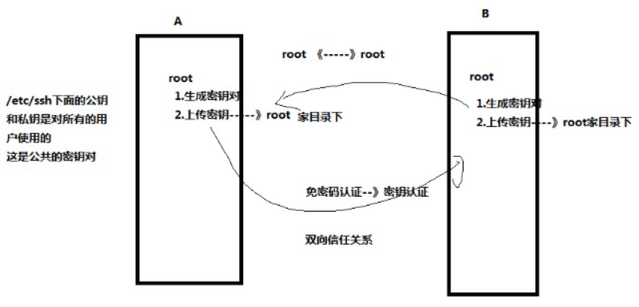

密钥认证的配置过程：
1.创建密钥对,会存放到/root/.ssh目录下
使用的是root用户
1 | [root@wudang-mysql-2 ssh]# ssh-keygen -t ecdsa |
2.上传公钥到另外一台备份服务器
1 | [root@wudang-mysql-2 ssh]# cd /root/.ssh/ |
3.验证免密码登录是否成功
1 | [root@wudang-mysql-2 .ssh]# ssh root@192.168.0.136 使用root用户登录192.168.0.136服务器 |
练习：
1.编写一个计划任务执行脚本backup_db.sh，每天的4点30分钟备份TENNIS库
2.备份mysql库里的user表
3.最好在另外一台机器上备份存放数据
4.本地也需要备份一份
5.存放路径/backup_db，备份文件的名字自己定义，需要包含时间精确到秒
6.本地和备份服务器都保存最近30天的备份数据
需要分析：
1.需要2台linux服务器，一台是mysql服务器，一台是备份服务器
2.Mysql服务器和备份服务器之间需要建立免密码登录（密钥认证）
3.编写脚本实现
[root@wudang-mysql-2 mysql]# vim backup_db.sh
远程连接到192.168.0.136服务器上执行 mkdir -p /backup_db
scp远程复制文件
[root@wudang-mysql-2 backup_db]# scp tennis.sql root@192.168.0.136:/backup_db
[root@wudang-mysql-2 backup_db]# ssh root@192.168.0.136 mkdir -p /backup_db
scp远程复制文件夹
[root@wudang-mysql-2 backup_db]# scp -r /backup_db/feng/ root@192.168.0.136:/backup_db
passwd 100% 989 263.3KB/s 00:00
[root@wudang-mysql-2 backup_db]#
====
脚本内容：
[root@wudang-mysql-2 mysql]# cat backup_db.sh
#!/bin/bash
#得到时间
ctime=$(date +%F_%H%M%S)
#在本地新建存放目录/backup_db
mkdir -p /backup_db
#备份TENNIS库到/backup_db叫tennis.sql
mysqldump -uroot -pSanchuang1234# TENNIS >/backup_db/${ctime}_tennis.sql
#备份mysql库里user表
mysqldump -uroot -pSanchuang1234# mysql user >/backup_db/${ctime}_mysql_user.sql
#备份服务器上新建文件夹/backup_db
ssh root@192.168.0.136 mkdir -p /backup_db
#上传当天备份的文件到备份服务器里192.168.0.136
scp /backup_db/${ctime}*.sql root@192.168.0.136:/backup_db
#本地保留最近30天的备份文件
find /backup_db -mtime +30 -type f -name “*.sql” -exec rm -rf {} ;
#备份服务器上也保留最近30天的文件
#生成一个脚本文件
cat >del_30days_file.sh <<EOF
find /backup_db -mtime +30 -type f -name “*.sql” -exec rm -rf {} ;
EOF
#上传脚本文件到备份服务器
scp del_30days_file.sh root@192.168.0.136:/root
#远程执行脚本
ssh root@192.168.0.136 bash /root/del_30days_file.sh
创建计划任务
[root@wudang-mysql-2 mysql]# crontab -e
30 4 * * * bash /root/mysql/backup_db.sh